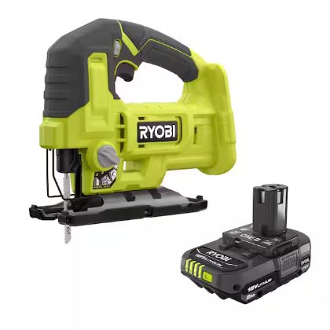

RYOBI 18V ONE+ Jig Saw (PCL525)

Safety precautions (summary)
This is a plain-language summary of the safety section of the owner's manual, written for high-school-age users. It is not a substitute for reading the manual itself — do that first.
Before you start
- Read the operator's manual and know what the tool can and can't do before you ever pull the trigger.
- Always wear safety glasses with side shields (rated ANSI Z87.1). Add a dust mask if the cut is dusty and hearing protection if you'll be cutting for a while.
- No loose clothing, jewelry, or dangling hair — tie hair back. Loose stuff gets caught in moving parts.
- This is a battery tool, so it's always "live" — there's no plug to pull. Remove the battery pack before changing blades, making adjustments, or storing the saw.
- Look the tool over. If the switch doesn't work, a part is damaged, or the blade is dull or bent, don't use it until it's fixed.
Your work area
- Keep the area clean, well lit, and free of clutter.
- Never use the saw around flammable liquids, gases, or heavy dust — power tools make sparks.
- Keep other people (especially younger kids) away while you're cutting. Distractions cause accidents.
- Don't use the tool in the rain or in damp locations, and never work from a ladder or anything wobbly — keep both feet on solid ground.
While cutting
- Clamp the workpiece to a stable surface. Never hold it in your hand or brace it against your body.
- Keep your hands away from the blade at all times, and hold the saw by its insulated grips in case the blade hits hidden wiring.
- Check the wood and pull out any nails before cutting.
- Let the blade do the work — don't force the saw.
- Stay alert. Don't use the tool when you're tired, distracted, or on medication that makes you drowsy. Don't overreach; keep your balance.
- Familiarity is a trap: even if you've used the saw a hundred times, one careless second is enough for a serious injury.
Battery pack
- Charge only with the matching RYOBI 18V charger, and only within the temperature range in the manual.
- Keep the battery away from metal objects (coins, keys, paper clips) that could short the terminals, and away from fire or heat — a damaged or overheated battery can explode.
- Don't use a battery that has been dropped, crushed, or damaged. If battery liquid gets on your skin, wash with soap and water; if it gets in your eyes, flush with clean water for at least 10 minutes and get medical help.
Afterward
- Remove the battery and store the saw out of reach of children and anyone who hasn't been trained on it.
- If you lend the saw to someone, lend them the manual too.
Replacement blades and batteries
Blades: This saw takes standard T-shank jig saw blades only (any brand — T-shank is the common standard; do not use U-shank blades, which can come loose and cause injury). The clamp is toolless, so no special wrench is needed. When shopping, match the blade to the material:
| Material | Blade type | TPI (teeth per inch) |
|---|---|---|
| General lumber / softwood | Wood-cutting | 6–10 |
| Plywood, decking, hardwood | Wood-cutting | 6–12 |
| Scroll / curved cuts in wood | Scrolling wood | 10–12 |
| Countertop / laminate | Down-stroke (reverse-tooth) wood | 10–12 |
| Plastics and PVC | Wood-cutting | 10–12 |
| Thin sheet metal | Metal-cutting | 14–24 |
For plunge cuts without a pilot hole, the manual specifies a 7 TPI blade.
Battery: Any RYOBI 18V ONE+ lithium-ion battery pack — this saw is part of RYOBI's shared ONE+ platform, so every ONE+ pack fits (a higher amp-hour rating just runs longer). Charge only with a RYOBI 18V ONE+ charger (see RYOBI's battery/charger correlation supplement 987000-432 for the exact list). The photo above shows the saw with a 2.0 Ah pack.
How the orbital settings work
The orbital adjustment knob (next to the blade clamp) has 4 settings, 0–3. Instead of just moving straight up and down, the blade can swing in a slight oval: it presses forward into the material on the upstroke (where the cutting happens) and pulls back on the downstroke so it doesn't drag. More orbit = faster, more aggressive cutting but a rougher edge; less orbit = slower but smoother.
- 0 — no orbit: countertop/laminate, and always for metal
- 1 — minimal orbit: plastics/PVC, scroll and curved cuts
- 2 — medium orbit: plywood, decking, hardwood
- 3 — maximum orbit: general lumber and softwood
Changing the blade
⚠️ STEP 1 — REMOVE THE BATTERY PACK. A battery tool is always live; pulling the pack is the only way to make it safe. If you're removing a blade you've just been cutting with, let it cool first.
Then, using the toolless clamp (no wrench needed):
- Rotate the blade clamp lever away from the orbital adjustment knob until you feel resistance, and hold it there.
- Insert a T-shank blade as far as it will go into the slot in the saw bar (some resistance is normal).
- Check that the back edge of the blade sits centered in the groove of the blade-support roller.
- Release the clamp and tug the blade to confirm it's locked in place — don't use the saw if the blade isn't fully seated.
- Reinstall the battery pack.
To remove a blade: battery out, blade cool, hold the clamp lever open the same way, and pull the blade out.
Full manual
The complete owner's manual is in this directory: jigsaw use and care manual.pdf